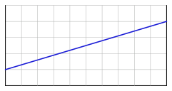
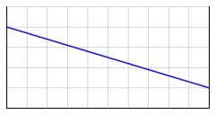
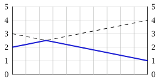
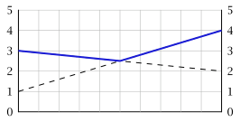
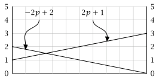
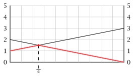
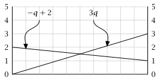
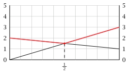

| $\mathsf{L}$ | $\mathsf{C}$ | $\mathsf{R}$ | |
| $\mathsf{T}$ | $2$ | $-1$ | $-2$ |
| $\mathsf{M}$ | $1$ | $0$ | $1$ |
| $\mathsf{B}$ | $-2$ | $-1$ | $2$ |
2 Zero-sum games
Recall the game of matching pennies.
| \(\mathsf{H}\) | \(\mathsf{T}\) | |||
| \(\mathsf{H}\) | \(1\) | \(-1\) | \(-1\) | \(1\) |
| \(\mathsf{T}\) | \(-1\) | \(1\) | \(1\) | \(-1\) |
This game has the property that for any strategy profile \((s_1, s_2) \in \ALPHABET S\), \[ u_1(s_1, s_2) + u_2(s_1, s_2) = 0. \] Games with such property are called zero-sum games. In this course, we will focus on two player zero sum games (ZSG).
- Some remarks
-
- Many classical games such sa chess, checkers, Go, etc. are two player ZSGs.
ZSGs are a highly restrictive and are, therefore, much easier to analyze as compared to general-sum games.
ZSGs emerge in many engineering applications when we consider worst case performance. Such scenarios can be considered as games against nature.
When we consider the maxmin value (or the security level) of player in general-sum game, we are effectively doing worst case analysis. This means that each player is considering an auxiliary ZSG in which all other players collude and act as a single opponnet who try to minimize the payff of the player. Thus, ZSGs can be useful even when analyzing non-zero-sum games.
2.1 Simplified notation
For two player ZSGs, we can simplify the notation. Since \(u_2(s_1, s_2) = -u_1(s_1, s_2)\), we can just specify the payoff of player 1 instead of specifying the payoff of both players. For instance, the matching pennies game can be represented as
| \(\mathsf{H}\) | \(\mathsf{T}\) | |
| \(\mathsf{H}\) | \(1\) | \(-1\) |
| \(\mathsf{T}\) | \(-1\) | \(1\) |
Here we can think of \(P_1\) as the maximizing player and \(P_2\) as the minimizing player. Thus, instead of a bimatrix representation, we will specify the payoffs by a matrix and assume that the row player is the maximizer and the column player is the minimizer.
Moreover, we will use \(u(s_1, s_2)\) to denote \(u_1(s_1, s_2)\) and \(-u_2(s_1, s_2)\).
Now recall that the maxmin levels of the two players: \[\begin{align*} \underline v_1 &= \max_{s_1 \in \ALPHABET S_1} \min_{s_2 \in \ALPHABET S_2} u_1(s_1, s_2) = \textcolor{red}{ \max_{s_1 \in \ALPHABET S_1} \min_{s_2 \in \ALPHABET S_2} u(s_1, s_2)} \\ \underline v_2 &= \max_{s_2 \in \ALPHABET S_2} \min_{s_1 \in \ALPHABET S_1} u_2(s_1, s_2) = \textcolor{red}{ - \min_{s_2 \in \ALPHABET S_2} \max_{s_1 \in \ALPHABET S_1} u(s_1, s_2)} \end{align*}\]
For ZSGs we use a simpler notation and define \[\begin{align*} \text{Maxmin value:} && \underline v &= \max_{s_1 \in \ALPHABET S_1} \min_{s_2 \in \ALPHABET S_2} u(s_1, s_2) \\ \text{Minmax value:} && \bar v &= \min_{s_2 \in \ALPHABET S_2} \max_{s_1 \in \ALPHABET S_1} u(s_1, s_2) \end{align*}\]
Example 2.1 Find the maxmin and minmax value of matching pennies.
Theorem 2.1 In a two player ZSG, \[\underline v \le \bar v.\]
Proof
Let \(s_1^*\) be a maxmin strategy for \(P_1\) and \(s_2^*\) be a minmax strategy for \(P_2\). Then, by definition of maxmin strategy, we have \[ \underline v = \max_{s_1 \in \ALPHABET S_1} \min_{s_2 \in \ALPHABET S_2} u(s_1, s_2) = \min_{s_2 \in \ALPHABET S_2} u(\textcolor{red}{s^*_1}, s_2). \] Thus, for any \(s_2 \in \ALPHABET S_2\), we have \[ \underline v \le u(s_1^*, s_2). \] Hence, by taking \(s_2 = s_2^*\), we get \[\begin{equation}\label{eq:maxmin-bound} \underline v \le u(s_1^*, s_2^*). \end{equation}\]
Similarly, by the definition of minmax strategy, we have \[ \bar v = \min_{s_2 \in \ALPHABET S_2} \max_{s_1 \in \ALPHABET S_1} u(s_1, s_2) = \max_{s_1 \in \ALPHABET S_1} u(s_1, \textcolor{red}{s^*_2}) \] Thus, for any \(s_1 \in \ALPHABET S_1\), we have \[ \bar v \ge u(s_1, s_2^*). \] Hence, by taking \(s_1 = s_1^*\), we get \[\begin{equation}\label{eq:minmax-bound} \bar v \ge u(s_1^*, s_2^*). \end{equation}\]
Combining \(\eqref{eq:maxmin-bound}\) and \(\eqref{eq:minmax-bound}\), we get \[ \underline v \le u(s_1^*, s_2^*) \le \bar v. \]
As shown in Example 2.1, in general the inequality is strict. However, for some games, the maxmin value is equal to the minmax value as seen from the following example.
Example 2.2 Find the maxmin and minmax value of the following game.
Definition 2.1 In a two player ZSG if \(\underline v = \bar v\), then the quantity \[ v \coloneqq \underline v = \bar v \] is called the value of the game. Any \((\text{maxmin}, \text{minmax})\) strategy of the players is called the optimal strategy profile.
As we have seen earlier, a two player ZSG may not have a value in pure strategies. In the sequel, we will show that if we allow mixed strategies, then every finite two player ZSG has a value!
2.2 Zero sum games on the unit square
As an intermediate step to mixed strategies, we consider two player ZSGs on the unit square, i.e., games on which \(\ALPHABET S_1 = \ALPHABET S_2 = [0,1]\).
For the ease of notation, we will use \(\ALPHABET X = [0, 1]\) and \(\ALPHABET Y = [0, 1]\) to denote the strategy spaces of the player.
Example 2.3 Consider a two player ZSG on the unit square with \[ u(x,y) = 4xy - 2x - y + 3, \quad \forall x \in \ALPHABET X, y \in \ALPHABET Y. \] Does this game have a value? If so, find all optimal strategy profiles
Solution
To check if the game has a value, we will compute the maxmin value \[ \underline v = \max_{x \in \ALPHABET X} \min_{y \in \ALPHABET Y} u(x,y) \] and the minmax value \[ \bar v = \min_{y \in \ALPHABET Y} \max_{x \in \ALPHABET X} u(x,y) \] and check if they are equal.
Consider, \[\begin{align*} \min_{y \in \ALPHABET Y} u(x,y) &= \min_{y \in [0,1]} \bigl[ 4xy - 2x - y - 4 \bigr] \\ &= \min_{y \in [0,1]} \bigl[ (4x -1) y - 2x + 3 \bigr]. \end{align*}\] For a fixed \(x\), this is a linear function in \(y\) and the minimizer depends on the slope.
- If the slope is positive, then the function is inreasing in \(y\) and the miniizer is \(0\).
- If the slope is negative, then the function is decreasing in \(y\) and the minimizer is \(1\).


Therefore, we have the following: \[ \min_{y \in [0,1]} u(x,y) = \begin{cases} 2x + 2, & \text{if } x < \tfrac 14 \\ 2.5, & \text{if } x = \tfrac 14 \\ -2x + 3, & \text{if } x > \tfrac 14 \end{cases} \]
The plot of \(\min_{y \in [0,1]} u(x,y)\) is shown below in Figure 2.1.

As we can see from the plot, \[ \bbox[5pt,border: 1px solid]{ \underline v = \max_{x \in [0,1]} \min_{y \in [0,1]} u(x,y) = 2.5. } \]
Now consider \[\begin{align*} \max_{x \in \ALPHABET X} u(x,y) &= \max_{x \in [0,1]} \bigl[ 4xy - 2x - y + 3 \bigr] \\ &= \max_{x \in [0,1]} \bigl[ (4y - 2) x - y + 3 \bigr] \end{align*}\]
By the same argument as before, we have \[ \max_{x \in [0,1]} u(x,y) = \begin{cases} -y + 3, & \text{if } y < \tfrac 12 \\ 2.5, & \text{if } y = \tfrac 12 \\ 3y + 1, & \text{if } y > \tfrac 12 \end{cases} \]
The plot of \(\max_{x \in [0,1]} u(x,y)\) is shown below Figure 2.2.

As we can see from the plot, \[ \bbox[5pt,border: 1px solid]{ \bar v = \min_{y \in [0,1]} \max_{x \in [0,1]} u(x,y) = 2.5. } \]
Since \(\underline v = \bar v = 2.5\), the game has a value of \(2.5\). The unique optimal strategy profile is \((\tfrac 14, \tfrac 12)\).
The previous example is an illustration of what is known as the :Minimax Theorem. One of the foundational results of Game Theory is the von Neumann minimax theorem (von Neumann 1928).
Recall that a function \(f \colon \ALPHABET X × \ALPHABET Y \to \reals\) is called bilinear if it is linear in each argument separately, i.e.,
- \(f(x_1 + x_2, y) = f(x_1,y) + f(x_2, y)\) and \(f(α x, y) = α f(x,y)\);
- \(f(x, y_1 + y_2) = f(x, y_1) + f(x, y_2)\) and \(f(x, αy) = α f(x,y)\).
Note that the utility function in Example 2.3 is bilinear.
Theorem 2.2 (von Neumann’s Minimax Theorem) Let \(\ALPHABET X\) and \(\ALPHABET Y\) be compact (i.e., closed and bounded) subsets of Eucledian spaces and \(f \colon \ALPHABET X × \ALPHABET Y \to \reals\) be a bilinear function. Then, \[ \max_{x \in \ALPHABET X} \min_{y \in \ALPHABET Y} f(x,y) = \min_{y \in \ALPHABET Y} \max_{x \in \ALPHABET X} f(x,y). \]
For a facinating historial discussion of this result, see Kjeldsen (2001).
In Example 2.3, since the utility function is bilinear, we could have simply used Theorem 2.2 to conclude that the game has a value, without doing any calculations.
A useful generalization of von Neumann’s minimax theorem is the following.
Theorem 2.3 Let \(\ALPHABET X\) and \(\ALPHABET Y\) be compact subsets of Eucledian space. If \(f \colon \ALPHABET X × \ALPHABET Y \to \reals\) is concave-convex, i.e.,
- for any fixed \(y\), \(f(⋅, y) \colon \ALPHABET X \to \reals\) is concave;
- for any fixed \(x\), \(f(x, ⋅) \colon \ALPHABET Y \to \reals\) is convex.
Then, \[ \max_{x \in \ALPHABET X} \min_{y \in \ALPHABET Y} f(x,y) = \min_{y \in \ALPHABET Y} \max_{x \in \ALPHABET X} f(x,y). \]
For a generalization that removes the compactness assumption, see Sion (1958).
2.3 Mixed strategies in finite games
We now revist the notion of mixed strategies in finite games. Recall that given a finite game \(\mathscr{G} = \langle N, (\ALPHABET S_i)_{i \in N}, (u_i)_{i \in N} \rangle\) and mixed strategies \(σ = (σ_i)_{i \in N}\) for the players, the expected utility is defined as \[\begin{equation} \label{eq:expected-utility} U_i(σ) = \sum_{s_1 \in \ALPHABET S_1} \cdots \sum_{s_N \in \ALPHABET S_N} σ_1(s_1) \cdots σ_N(s_N) u_i(s_1, \dots, s_N) \end{equation}\] or more compactly for two player games \[ U_i(σ_1, σ_2) = \sum_{s_1 \in \ALPHABET S_1} \sum_{s_2 \in \ALPHABET S_2} σ_1(s_1) σ_2(s_2) u_i(s_1, s_2). \]
A game in which players are playing mixed strategies may be viewed as another game, called the mixed extension, in which all players have continuous action spaces and are playing pure strategies.
Definition 2.2 (Mixed extension) Given a game \(\mathscr{G} = \langle N, (\ALPHABET S_i)_{i \in N}, (u_i)_{i \in N} \rangle\), its mixed extension is a game \(\mathscr{G}^* = \langle N, ( Δ(\ALPHABET S_i) )_{i \in N}, (U_i)_{i \in N} \rangle\) where
- \(Δ(\ALPHABET S_i)\) denotes the set of probability distributions over \(\ALPHABET S_i\)
- \(U_i \colon \prod_{j \in N} Δ(\ALPHABET S_j) \to \reals\) is the expected utility function defined in \(\eqref{eq:expected-utility}\).
For a discussion of different interpretations of mixed strategies, see Osborne and Rubinstein (1994, Sec 3.2).
Observe that if the original game \(\mathscr{G}\) is a two player ZSG, then its mixed extension \(\mathscr{G}^*\) is also a two player ZSG because for any mixed strategy \((σ_1, σ_2)\) \[\begin{align*} U_1(σ_1, σ_2) + U_2(σ_1, σ_2) &= \sum_{s_1 \in \ALPHABET S_1} \sum_{s_2 \in \ALPHABET S_2} σ_1(s_1) σ_2(s_2) \underbrace{\bigl[ u_1(s_1,s_2) + u_2(s_1, s_2) \bigr]}_{=0} \\ &= 0. \end{align*}\] Thus, we may simply use \(U\) to denote the expected utility of \(P_1\) with the understanding that the expected utility of \(P_2\) is \(-U\).
Furthermore, observe that \(U\) is bilinear. Thus, we can conclude the following from Theorem 2.2.
Theorem 2.4 For any finite game \(\mathscr{G}\), its mixed extesion \(\mathscr{G}^*\) has a value, which is called value of \(\mathscr{G}\) in mixed strategies.
Thus, we finally have a solution concept that always exists, albeit for a special subclass of games.
2.4 Properties of optimal strategy profiles
The value of a game has a nice geometric interpretation.
Definition 2.3 Let \(\ALPHABET X\) and \(\ALPHABET Y\) be sets and \(f \colon \ALPHABET X × \ALPHABET Y \to \reals\). A point \((x^*, y^*) \in \ALPHABET X × \ALPHABET Y\) is said to be a saddle point of \(f\) if \[\begin{align*} f(x^*, y^*) &\ge f(x, y^*), & \forall x &\in \ALPHABET X \\ f(x^*, y^*) &\le f(x^*, y), & \forall y &\in \ALPHABET Y \end{align*}\]

The term saddle point comes from the fact that the typical two dimensional example of a function with a saddle point looks like a saddle of a horse (curves up in one direction and curves down in the other).
A key property of an optimal strategy profile is the following.
Theorem 2.5 In a two player zero sum game, \((σ_1^*, σ_2^*)\) is a saddle point of the expected utility function \(U\) if and only if \(σ_1^*\) is an optimal strategy for player 1 and \(σ_2^*\) is an optimal strategy for player 2.
In this case \(U(σ_1^*, σ_2^*)\) is the value of the game.
Proof
This follows immediately from the definition of saddle point and that of the value of a game.
In general, a ZSG can have more than one optimal strategy profile. Suppose \((σ_1^*, σ_2^*)\) and \((τ_1^*, τ_2^*)\) where \(σ_1^* \neq τ_1^*\) and \(σ_2^* \neq τ_2^*\) both satisfy \[ \max_{σ_1 \in Δ(\ALPHABET S_1)} \min_{σ_2 \in Δ(\ALPHABET S_2)} U(σ_1, σ_2) = \min_{σ_2 \in Δ(\ALPHABET S_2)} \max_{σ_1 \in Δ(\ALPHABET S_1)} U(σ_1, σ_2) = v. \] Then,
\(U(σ_1^*, σ_2^*) = U(τ_1^*, τ_2^*)\)
Hence, if a game has a value and multiple optimal strategy profiles, then each optimal strategy profiles gives the value of the game.
\(U(σ_1^*, τ_2^*) = U(τ_1^*, σ_2^*) = v\)
Hence, it does not matter which optimal strategy is chosen by players 1 and 2. Every combination of optimal strategies is an optimal strategy profile.
The proof of this statement is left as an exercise (see Exercise 2.3).
2.5 Computing the value of ZSG
We now consider how to compute the value of ZSG in mixed strategies. The key simplification is as follows. When computing the maxmin value \[ \underline v = \max_{σ_1 \in Δ(\ALPHABET S_1)} \min_{σ_2 \in Δ(\ALPHABET S_2)} U(σ_1, σ_2), \] consider the inner minimization problem for a fixed \(σ_1 \in Δ(\ALPHABET S_1)\). In this case, the set of best resposes of \(P_2\) will always include pure strategies. This is because, we can write \[ U(σ_1, σ_2) = \sum_{s_2 \in \ALPHABET S_2} σ_2(s_2) U(σ_1, s_2). \] Thus, if the minimizer \(σ_2\) gives positive weights to pure strategies \(s_{2,i}, s_{2,j}, s_{2,k}\), etc., each of them must have the same \(U(σ_1, s_2)\); otherwise, we can omit putting positive weight on the pure strategy which has strictly large payoff and reduce the expected utility, which is not possible because \(σ_2\) is a minimizer.
Therefore, when computing the maxmin value, we may consider \[ \underline v = \max_{σ_1 \in Δ(\ALPHABET S_1)} \textcolor{red}{ \min_{s_2 \in \ALPHABET S_2} } U(σ_1, \textcolor{red}{s_2}). \]
By a similar argument, for minmax value, we may consider \[ \bar v = \min_{σ_2 \in Δ(\ALPHABET S_2)} \textcolor{red}{ \max_{s_1 \in \ALPHABET S_1} } U(\textcolor{red}{s_1}, σ_2). \]
To illustrate how this simplification helps, we start with an example of a \(2 × 2\) game. In this case, the mixed extension is similar to the game on the unit square, which we have considered earlier.
Example 2.4 Find the value in mixed strategies of the game below:
| $\mathsf{L}$ | $\mathsf{R}$ | |
| $\mathsf{T}$ | $3$ | $0$ |
| $\mathsf{B}$ | $1$ | $2$ |
Solution
Strategy for row player
We first consider the row player. Suppose the row player is playing \(σ_1 = (p, 1-p)\), i.e., it chooses action \(\mathsf{T}\) with probability \(p\) and action \(\mathsf{B}\) with probability \(1-p\). Then,
\[\begin{alignat*}{2} U_1(σ_1, \mathsf{L}) &= 3p + (1-p) &&= 2p + 1, \\ U_1(σ_1, \mathsf{R}) &= 2(1-p) &&= -2p + 2. \end{alignat*}\]
The two payoffs are shown in Figure 2.3.

We now consider \[ \underline v = \max_{p \in [0, 1]} \min \bigl{ 2p + 1, -2p + 2 \bigr\}. \] Note that the inner minimization can be easily carried out graphically. The minimization of the two curves is what is called a lower envelop which is shown in red in Figure 2.6.

Since each curve is linear, the lower envelop is convex and its maximum value is the peak point, which is also the point of intersection of the two curves and is given by \[ 2p + 1 - -2p + 2 \implies \bbox[5pt,border: 1px solid]{ p = \tfrac{1}{4} }. \]
Thus, \(σ_1^* = (\frac 14, \frac 34)\) and \[ \underline v = U(σ_1^*, \mathsf{L}) = U(σ_1^*, \mathsf{R}) = \tfrac 32. \]
Strategy for column player
Now, let’s repeat the calculations for the column player. Suppose the column player is playing \(σ_2 = (q, 1-q)\), i.e., it chooses action \(\mathsf{L}\) with probability \(q\) and action \(\mathsf{R}\) with probability \(1-q\). Then,The two payoffs are shown in Figure 2.5.

We now consider \[ \bar v = \min_{q \in [0, 1]} \max \bigl{3q, -q + 2 \bigr\}. \] As before, the inner maximization can be easily carried out graphically. The maximization of the two curves is called an upper envelop which is shown in red in ?fig-2x2-upper.

Since each curve is linear, the upper envelop is concave and its minimum value is the lowest point, which is also the point of intersection of the two curves and is given by \[ 3q = -q + 2 \implies \bbox[5pt,border: 1px solid]{ q = \tfrac{1}{2} }. \]
Thus, \(σ_2^* = (\frac 12, \frac 12)\) and \[ \bar v = U(\mathsf{T}, σ_2^*) = U(\mathsf{B}, σ_2^*) = \tfrac 32. \]
Note that, as expected, \(\bar v = \underline v\).
2.6 Computing optimal strategy profile using linear programming
The graphical method described in the previous section does not work if both players have more than two actions. In general, the optimal solution can be obtained using linear programming.
Let \((σ_1, σ_2)\) be a candidate optimal strategy profile. Then, it must satisfy \[\begin{align} U(σ_1, s_2) &\ge v, & \forall s_2 &\in \ALPHABET S_2 \label{eq:constraint-1} \\ U(s_1, σ_2) &\le v, & \forall s_1 &\in \ALPHABET S_1. \label{eq:constraint-2} \end{align}\]
We can write \(\eqref{eq:constraint-1}\)–\(\eqref{eq:constraint-2}\) as two linear programs. Suppose \(\ABS{\ALPHABET S_1} = n\) and \(\ABS{\ALPHABET S_2} = m\). For the ease of notation, we assume that \(\ALPHABET S_1 = \{1, \dots, n\}\) and \(\ALPHABET S_2 = \{1, \dots, m\}\) and use \(u(i,j)\) to denote the utility of player 1 (the maximizer) when player 1 plays \(i \in \ALPHABET S_1\) and player 2 plays \(j \in \ALPHABET S_2\).
Let \[ σ_1 = (p_1, \dots, p_n) \quad\text{and}\quad σ_2 = (q_1, \dots, q_m) \] be an optimal strategy profile of the game and \(v\) be the value. Then, \(\eqref{eq:constraint-1}\) and \(\eqref{eq:constraint-2}\) are equalent to the following linear programs.
\[ \bbox[5pt,border: 1px solid]{ \begin{gathered} \max v \\ \text{s.t. } \begin{aligned}[t] & \sum_{i=1}^n p_i u(i,j) \ge v, \quad \forall j \in \ALPHABET S_2 \\ & p_i \ge 0, \quad \forall i \in \{1, \dots, n\} \\ & \sum_{i=1}^n p_i = 1 \end{aligned} \end{gathered}} \qquad \bbox[5pt,border: 1px solid]{ \begin{gathered} \min v \\ \text{s.t. } \begin{aligned}[t] & \sum_{j=1}^m q_j u(i,j) \le v, \quad \forall i \in \ALPHABET S_1 \\ & q_j \ge 0, \quad \forall j \in \{1, \dots, m\} \\ & \sum_{j=1}^m q_j = 1 \end{aligned} \end{gathered}} \]
See Exercise 2.5 for an example.
Exercises
Exercise 2.1 For each of the following games, find the value of the game and the optimal strategy profile.
| $\mathsf{L}$ | $\mathsf{R}$ | |
| $\mathsf{T}$ | $6$ | $0$ |
| $\mathsf{B}$ | $-3$ | $3$ |
| $\mathsf{L}$ | $\mathsf{R}$ | |
| $\mathsf{T}$ | $-3$ | $8$ |
| $\mathsf{B}$ | $4$ | $4$ |
Exercise 2.2 Find the optimal strategy profile and the value of the following game.
| $\mathsf{L}$ | $\mathsf{C}$ | $\mathsf{R}$ | |
| $\mathsf{T}$ | $0$ | $4$ | $6$ |
| $\mathsf{M}$ | $5$ | $7$ | $4$ |
| $\mathsf{B}$ | $9$ | $6$ | $3$ |
Hint: Use iterative elimination of strongly dominated strategies to first reduce the above to a \(2 × 2\) game and then simplify the resulting game.
Exercise 2.3 Suppose \((σ_1^*, σ_2^*)\) and \((τ_1^*, τ_2^*)\) both satisfy \[ \max_{σ_1 \in Δ(\ALPHABET S_1)} \min_{σ_2 \in Δ(\ALPHABET S_2)} U(σ_1, σ_2) = \min_{σ_2 \in Δ(\ALPHABET S_2)} \max_{σ_1 \in Δ(\ALPHABET S_1)} U(σ_1, σ_2) = v. \] Prove that \[ U(σ_1^*, τ_2^*) = U(τ_1^*, σ_2^*) = v. \]
Hint: Use Theorem 2.5 to argue that \[ U(τ_1^*, τ_2^*) \le U(τ_1^*, σ_2^*) \le U(σ_1^*, σ_2^*) \quad\text{and}\quad U(σ_1^*, σ_2^*) \le U(σ_1^*, τ_2^*) \le U(τ_1^*, τ_2^*). \]
Exercise 2.4 A zero-sum game with \(\ALPHABET S_1 = \ALPHABET S_2\) is called symmetric if the utlity function is skew-symmetric, i.e., \[ u(s_1, s_2) = - u(s_2, s_1), \quad \forall s_1, s_2 \in \ALPHABET S_1. \] An example of a symmetric game is rock-paper-scissors.
Let \(\mathscr{G}\) be a symmetric game. Show that:
The value of \(\mathscr{G}\) is mixed strategies is zero.
If \((σ_1^*, σ_2^*)\) is an optimal (mixed) strategy for \(\mathscr{G}\), then \((σ_2^*, σ_1^*)\) is also an optimal (mixed) strategy.
Use part b and Exercise 2.3 to argue that a symmetric zero-sum game always has a symmetric optimal (mixed) strategy of the form \((σ^*, σ^*)\), where both players are playing the same mixed strategy.
Exercise 2.5 Use the LP formulation to find optimal strategy profile of the following games.
| $\mathsf{1}$ | $\mathsf{2}$ | $\mathsf{3}$ | |
| $\mathsf{1}$ | $3$ | $-1$ | $2$ |
| $\mathsf{2}$ | $1$ | $2$ | $-2$ |
| $\mathsf{1}$ | $\mathsf{2}$ | $\mathsf{3}$ | $\mathsf{4}$ | |
| $\mathsf{1}$ | $6$ | $0$ | $5$ | $6$ |
| $\mathsf{2}$ | $-3$ | $3$ | $-4$ | $3$ |
| $\mathsf{3}$ | $8$ | $1$ | $2$ | $2$ |
You may use any programming language to solve the linear program.